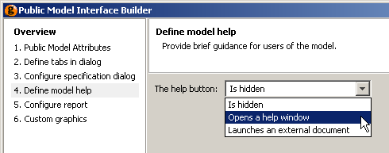
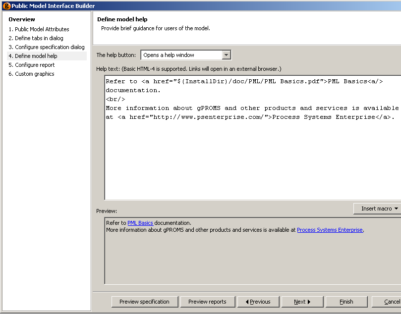
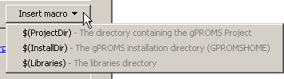
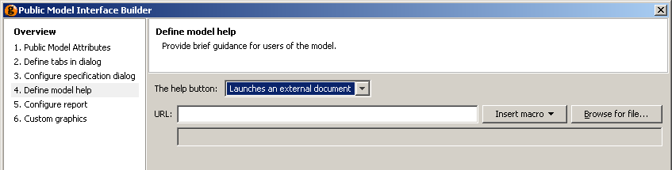
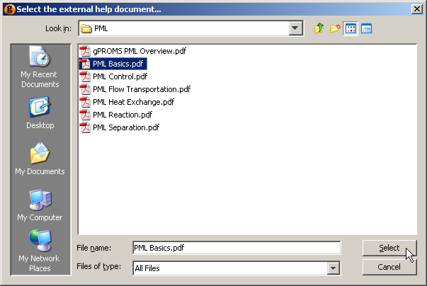
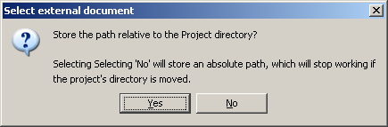

Step 4
A Help button can be added to the public Model interface. Help can be provided in two different ways or disabled according to the selection made using the listbox in step 4 of the Public Model Interface Builder dialog:

When Opens a help window is selected, the dialog changes to include a text box and a preview pane. The help page must be defined using XHTML and can include links to external web pages and documents, as shown below.

The preview pane is updated in real time, as the XHTML is edited above. Any links in the help page are active in the preview pane and can be followed by left clicking on them. Links to external web sites will open a new browser window or tab (depending on your browser settings); links to files will launch the appropriate reader.
When providing links to documents, the Insert macro button provides a quick way to refer to common directories:

When typing in the path to an external document, selecting one of the options from the list box above will result in the macro being inserted into the text. See the previous screen shot for an example.
The simplest way to provide Model help is to link directly to an external document. This is done by selecting Launches an external document from the Help button: list box. The Public Model Interface Builder dialog will then change to:

There are two ways to specify the location of the external document:
Type the location into the URL: text box
The Insert macro button can be used as before
Locate the document using the Browse for file... button

If the document is contained in the same directory as the project file (or is contained in one of its sub directories), then another dialog will appear. This allows you to choose whether to specify the location of the document as an absolute path or a relative one.

If documentation is always kept in the same location, then select an absolute path: this way, the project file can be moved to a different location without breaking the link. This would be useful if, for example, a Model developer released a project file to a number of different users but wanted to keep one copy of the documentation in a single public directory. If the documentation is to be kept in the same folder as the project file (or one of its subfolders), then select a relative path so that the project folder can be moved to a different location without breaking the link.